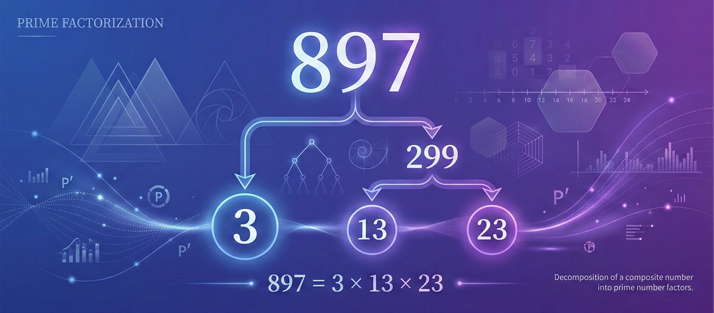

897 is a composite number with multiple factors
A simple way to check if 897 is divisible by 3 is to add its digits:
Since 24 is divisible by 3, the number 897 is also divisible by 3. This means 897 cannot be a prime number.

Breaking down 897 into its prime building blocks
897 ÷ 3 = 299
897 is divisible by 3 (sum of digits: 8+9+7=24, divisible by 3)
299 ÷ 13 = 23
299 is divisible by 13
23 is prime
Final result: 897 = 3 × 13 × 23
Check if any number is prime or composite
A prime number is a natural number greater than 1 that has no positive divisors other than 1 and itself. Examples include 2, 3, 5, 7, 11, 13, 17, 19, and 23.
A composite number is a positive integer that has at least one divisor other than 1 and itself. Since 897 can be divided by 3, 13, and 23, it is a composite number.
Prime factorization is the process of expressing a composite number as a product of its prime factors. For 897, the prime factorization is 3 × 13 × 23.
Prime numbers are fundamental in mathematics, cryptography, computer science, and number theory. They form the building blocks of all natural numbers.
Common questions about 897 and prime numbers
No, 897 is not a prime number. It is a composite number because it has divisors other than 1 and itself. The prime factorization of 897 is 3 × 13 × 23. You can quickly verify this by adding its digits (8+9+7=24), and since 24 is divisible by 3, 897 is also divisible by 3.
The number 897 has 8 total divisors:
1, 3, 13, 23, 39, 69, 299, 897
The prime factors are 3, 13, and 23, which multiply together to give 897.
A simple divisibility rule for 3: Add all the digits of the number together. If the sum is divisible by 3, then the original number is also divisible by 3.
Example with 897:
8 + 9 + 7 = 24
Since 24 ÷ 3 = 8, then 897 is divisible by 3.
This rule works for any number and is a quick way to determine divisibility without performing long division.
Prime numbers are natural numbers greater than 1 that have exactly two positive divisors: 1 and themselves. Examples include 2, 3, 5, 7, 11, 13, 17, 19, and 23.
Composite numbers are positive integers that have at least one divisor other than 1 and themselves. Since 897 can be divided by 3, 13, and 23 (in addition to 1 and 897), it is a composite number.
Prime factorization is fundamental in mathematics because:
Yes! The interactive prime number checker on this page works for any positive integer. Simply enter a number and click "Check" to see if it's prime or composite. For composite numbers, you'll also see the prime factorization and all divisors. This tool uses efficient algorithms to determine primality and find factors.
Here are some interesting properties of 897: